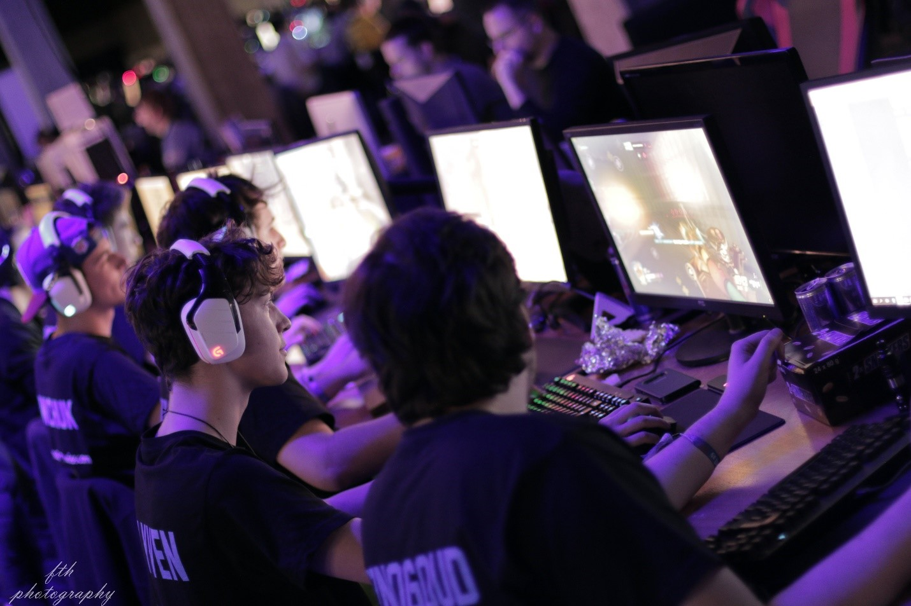
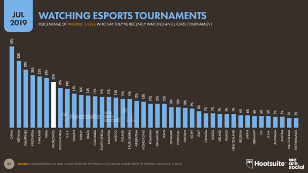

ESPORTS
Esports, short for electronic sports, is a form of competition using video games.Esports often takes the form of organized, multiplayer video game competitions, particularly between professional players, individually or as teams. Although organized competitions have long been a part of video game culture, these were largely between amateurs until the late 2000s, when participation by professional gamers and spectatorship in these events through live streaming saw a large surge in popularity. By the 2010s, esports was a significant factor in the video game industry, with many game developers actively designing and providing funding for tournaments and other events.
By the late 2010s, it was estimated that the total audience of esports would grow to 454 million viewers, with revenue increasing to more than US$1 billion, with China accounting for 35% of the global esports revenue in 2020. The increasing availability of online streaming media platforms, particularly YouTube and Twitch, have become central to the growth and promotion of esports competitions. Despite viewership being approximately 85% male and 15% female, with a majority of viewers between the ages of 18 and 34, female gamers have also played professionally. The popularity and recognition of esports first took place in Asia, seeing significant growth in China and South Korea, with the latter having licensed professional players since 2000. Despite its large video game industry, esports in Japan is relatively underdeveloped, with this being largely attributed to its broad anti-gambling laws which prohibit paid professional gaming tournaments.[9][10] Outside of Asia, esports are also popular in Europe and the Americas, with both regional and international events taking place in those regions.
It is highly unlikely that E-sport viewership will surpass the most popular sports viewership, but E-Sports is sure putting out the numbers. I, the author of this blog, even have a favorite E-Sports teams (I will not mention it).